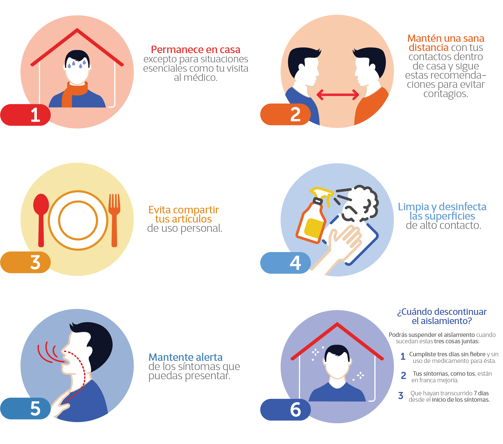

Sabemos que la pandemia alcanzo gran impacto ante la sociedad, por lo que nos podemos nuestras medidas de seguiridad!
Funcionamiento del Comité para la Detección y Control de Infecciones Nosocomiales (Codecin); difusión y cumplimiento de las disposiciones vigentes; instalación de filtros en todos los accesos de cada unidad médica para detectar casos sospechosos; colocación de carteles informativos; solicitud de insumos esenciales como gel sanitizante, jabón antibacterial, cubrebocas y guantes; así como restricción del número de visitas a pacientes hospitalizados y reducción de acceso de acompañantes de pacientes a servicios ambulatorios, por mencionar algunas.
Asi mismo, se cuenta con los números de apoyo emocional: Línea de la Vida 800 911 2000, Locatel 55 56 58 11 11 – 55 54 84 04 43, Atención psicológica a distancia UNAM 55 50 25 08 55 y Centros de Integración Juvenil 55 52 12 12 12 , así como vía Whatsapp 55 45 55 12 12, donde a través de unidades especializadas, como la Comisión Nacional contra las Adicciones (Conadic), la Secretaría Técnica del Consejo Nacional de Salud Mental (ST Consame) y la Dirección General de Servicios de Atención Psiquiátrica (SAP), se brinda atención a la población en general por alteraciones emocionales frente a la pandemia de COVID-19.
De la misma manera la Secretaria de Salud implementa un cuestionario, para la deteccion del riesgo de salud, el cual puedes consultar en el siguiente enlace "CUESTIONARIO DE DETECCION DE SALUD"
Acontinuacion de presentaremos algunas recomendaciones que te brindamos nosotros para disminuir el riesgo en tu casa y comunidad:

Nuestros servicios COVID 19 para ti
Pruebas COVID 19
Todas las pruebas COVID 19 en nuestro Local.
Atención COVID 19 en tu casa
Especialistas, enfermería y equipo 24/7 hasta tu hogar, en paquetes de 7 y 14 días.